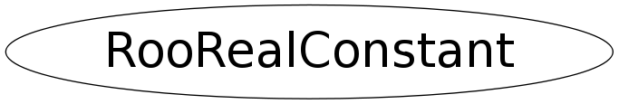

class RooRealConstant
RooRealConstant provides static functions to create and keep track of RooRealVar constants. Instead of creating such constants by hand (e.g. RooRealVar one("one","one",1)), simply use
RooRealConstant::value(1.0)whenever a reference to RooRealVar with constant value 1.0 is needed. RooRealConstant keeps an internal database of previously created RooRealVar objects and will recycle them as appropriate.
Function Members (Methods)
public:
| RooRealConstant() | |
| RooRealConstant(const RooRealConstant&) | |
| virtual | ~RooRealConstant() |
| static TClass* | Class() |
| static void | cleanup() |
| virtual TClass* | IsA() const |
| RooRealConstant& | operator=(const RooRealConstant&) |
| static RooConstVar& | removalDummy() |
| virtual void | ShowMembers(TMemberInspector& insp) |
| virtual void | Streamer(TBuffer& b) |
| void | StreamerNVirtual(TBuffer& b) |
| static RooConstVar& | value(Double_t value) |
protected:
| static void | init() |
Data Members
protected:
| static RooArgList* | _constDB | List of already instantiated constants |
| static TIterator* | _constDBIter | Iterator over constants list |
Class Charts
{kind=link}
{kind=link}
{kind=link}
{kind=link}
